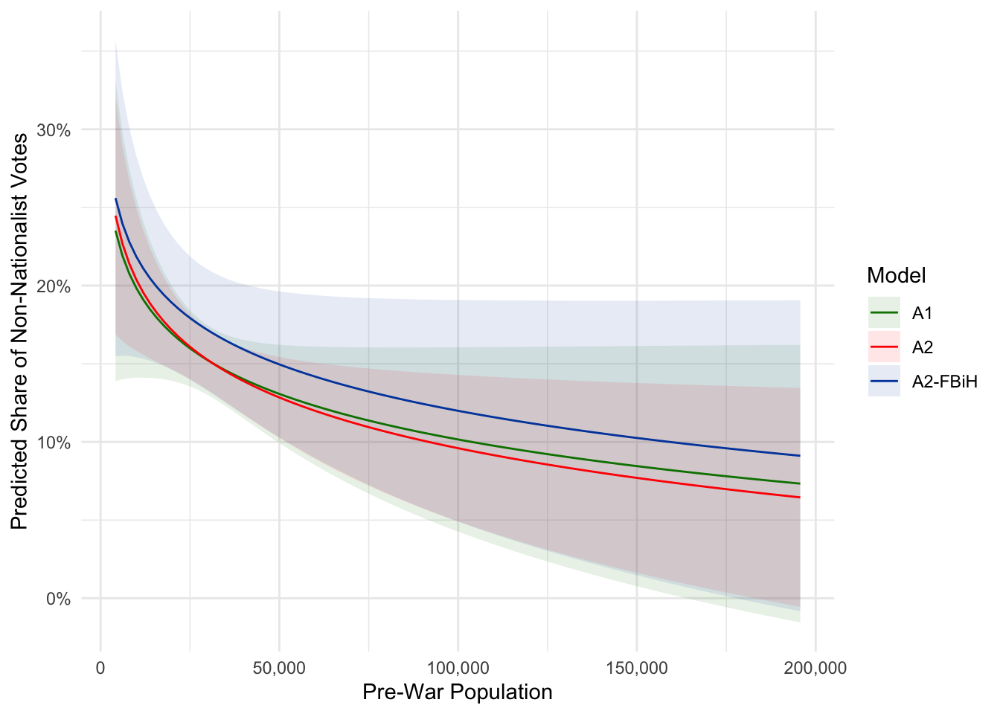
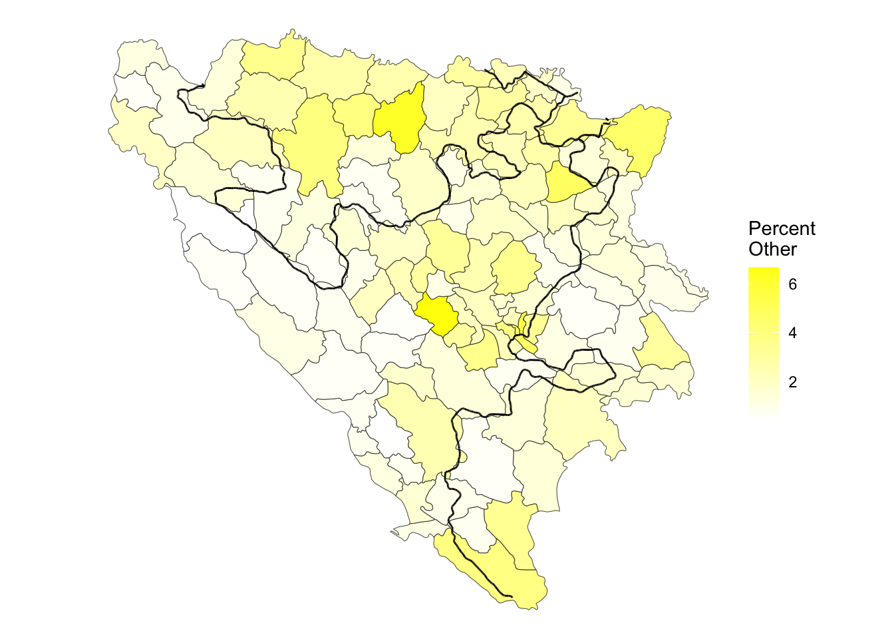

Results and Findings
Overall Findings
Models A1, A2, and A3 (see Table 1) assess vote proportions for non-nationalist parties across all municipalities in Bosnia and Herzegovina in the 1997 municipal elections.
| A1 | A2 | A3 |
|---|---|---|---|
(Intercept) | 0.642** | 0.796*** | -0.410+ |
(0.239) | (0.195) | (0.224) | |
Population 1991, logged | -0.042+ | -0.047* | 0.030 |
(0.024) | (0.019) | (0.019) | |
Percent Yugoslavs, 1991 | 2.188*** | 2.407*** | 1.401** |
(0.636) | (0.523) | (0.511) | |
Percent Other, 1991 | 1.938 | -0.600 | 0.410 |
(1.462) | (1.309) | (1.213) | |
Absolute Change in Bosniaks, Croats, and Serbs, 1991 to 2013 | 0.053 | -0.005 | -0.006 |
(0.064) | (0.052) | (0.053) | |
Distance to Croatia | -0.009 | -0.765+ | 0.175 |
(0.495) | (0.424) | (0.384) | |
Distance to Yugoslavia | 0.361 | -0.070 | -0.055 |
(0.242) | (0.218) | (0.208) | |
Distance to IEBL | -3.088+ | 0.415 | -1.326 |
(1.664) | (1.517) | (1.362) | |
Deaths per Population | -0.576 | -1.181* | 0.388 |
(0.721) | (0.601) | (0.571) | |
Ethnic Fractionalization, 1991 | -0.407*** | -0.183+ | -0.055 |
(0.113) | (0.099) | (0.102) | |
Change in Ethnic Fractionalization, 1991-2013 | 0.081 | 0.140+ | 0.188* |
(0.097) | (0.084) | (0.081) | |
FBiH Municipality | -0.094* | 0.062* | 0.273*** |
(0.041) | (0.026) | (0.064) | |
Sarajevo District | -0.054 | -0.047 | -0.077+ |
(0.050) | (0.043) | (0.041) | |
Percent Vote Cast Outside Municipality, 1997 | -0.006 | -0.032 | -0.179* |
(0.090) | (0.077) | (0.076) | |
Municipality Area, in km | 0.000+ | 0.000 | -0.000 |
(0.000) | (0.000) | (0.000) | |
Turnout Rate | -0.001 | -0.079 | -0.109 |
(0.096) | (0.084) | (0.079) | |
Percent Muslims, 1991 | 0.097 | ||
(0.072) | |||
Change in % Bosniaks, 1991 to 2013 | 0.237** | ||
(0.074) | |||
Percent Croats, 1991 | -0.386*** | ||
(0.053) | |||
Change in % Croats, 1991 to 2013 | -0.168+ | ||
(0.089) | |||
Percent Serbs, 1991 | 0.602*** | ||
(0.083) | |||
Change in % Serbs, 1991 to 2013 | 0.213* | ||
(0.091) | |||
Num.Obs. | 130 | 130 | 130 |
R2 | 0.339 | 0.507 | 0.548 |
AIC | -144.9 | -183.1 | -194.3 |
BIC | -90.4 | -128.6 | -139.8 |
Log.Lik. | 91.462 | 110.538 | 116.148 |
F | 3.378 | 6.778 | 7.982 |
RMSE | 0.12 | 0.10 | 0.10 |
+ p < 0.1, * p < 0.05, ** p < 0.01, *** p < 0.001 | |||
Models A1-RS, A2-RS, and A3-RS (see Table 2) assess vote proportions for non-nationalist parties across municipalities in Republika Srpska, including Brčko district, in the 1997 municipal elections.
| A1-RS | A2-RS | A3-RS |
|---|---|---|---|
(Intercept) | 0.219 | 0.220 | -0.613 |
(0.260) | (0.271) | (0.434) | |
Population 1991, logged | 0.014 | 0.012 | 0.016 |
(0.028) | (0.029) | (0.026) | |
Percent Yugoslavs, 1991 | 0.642 | 0.757 | 0.599 |
(0.786) | (0.789) | (0.728) | |
Percent Other, 1991 | -1.629 | -1.480 | -0.902 |
(1.588) | (1.623) | (1.532) | |
Absolute Change in Bosniaks, Croats, and Serbs, 1991 to 2013 | -0.255** | -0.130* | 0.065 |
(0.090) | (0.061) | (0.126) | |
Distance to Croatia | -0.143 | -0.225 | -0.187 |
(0.483) | (0.506) | (0.456) | |
Distance to Yugoslavia | 0.616* | 0.646* | 0.585* |
(0.265) | (0.273) | (0.266) | |
Distance to IEBL | 1.072 | 1.098 | 0.683 |
(1.750) | (1.782) | (1.743) | |
Deaths per Population | 0.073 | -0.132 | 0.501 |
(0.613) | (0.594) | (0.655) | |
Ethnic Fractionalization, 1991 | 0.152 | -0.075 | 0.492 |
(0.195) | (0.146) | (0.343) | |
Change in Ethnic Fractionalization, 1991-2013 | 0.172 | -0.050 | 0.644+ |
(0.159) | (0.131) | (0.369) | |
Sarajevo District | -0.086 | -0.101 | -0.057 |
(0.061) | (0.062) | (0.061) | |
Percent Vote Cast Outside Municipality, 1997 | -0.273** | -0.273** | -0.268** |
(0.088) | (0.091) | (0.087) | |
Municipality Area, in km | 0.000 | 0.000 | 0.000 |
(0.000) | (0.000) | (0.000) | |
Turnout Rate | -0.129 | -0.079 | -0.163 |
(0.093) | (0.088) | (0.100) | |
Percent Muslims, 1991 | -0.294 | ||
(0.195) | |||
Change in % Bosniaks, 1991 to 2013 | -0.496* | ||
(0.249) | |||
Percent Croats, 1991 | 0.062 | ||
(0.207) | |||
Change in % Croats, 1991 to 2013 | 0.216 | ||
(0.205) | |||
Percent Serbs, 1991 | 0.836* | ||
(0.412) | |||
Change in % Serbs, 1991 to 2013 | 0.378 | ||
(0.348) | |||
Num.Obs. | 60 | 60 | 60 |
R2 | 0.640 | 0.626 | 0.645 |
AIC | -108.0 | -105.7 | -108.8 |
BIC | -70.3 | -68.0 | -71.1 |
Log.Lik. | 72.005 | 70.846 | 72.407 |
F | 4.774 | 4.491 | 4.874 |
RMSE | 0.07 | 0.07 | 0.07 |
+ p < 0.1, * p < 0.05, ** p < 0.01, *** p < 0.001 | |||
Models A1-FBiH, A2-FBiH, and A3-FBiH (see Table 3) assess vote proportions for non-nationalist parties across municipalities in the Federation of Bosnia and Herzegovina, including Brčko district, in the 1997 municipal elections.
| A1 | A2 | A3 |
|---|---|---|---|
(Intercept) | 0.462 | 0.835** | -0.118 |
(0.337) | (0.276) | (0.259) | |
Population 1991, logged | -0.041 | -0.043+ | 0.023 |
(0.032) | (0.025) | (0.024) | |
Percent Yugoslavs, 1991 | 3.216*** | 2.635*** | 1.227* |
(0.785) | (0.592) | (0.626) | |
Percent Other, 1991 | 1.947 | 0.916 | 2.596+ |
(1.964) | (1.550) | (1.500) | |
Absolute Change in Bosniaks, Croats, and Serbs, 1991 to 2013 | 0.179 | 0.081 | -0.133 |
(0.144) | (0.096) | (0.134) | |
Distance to Croatia | 0.489 | 0.109 | 1.075+ |
(0.838) | (0.662) | (0.592) | |
Distance to Yugoslavia | -0.366 | -0.752* | -0.478+ |
(0.369) | (0.294) | (0.284) | |
Distance to IEBL | -2.549 | 1.980 | -1.075 |
(2.319) | (1.944) | (1.767) | |
Deaths per Population | -4.429+ | -6.788*** | -1.948 |
(2.555) | (1.987) | (1.903) | |
Ethnic Fractionalization, 1991 | -0.669*** | -0.434** | -0.256+ |
(0.166) | (0.135) | (0.145) | |
Change in Ethnic Fractionalization, 1991-2013 | 0.151 | 0.039 | -0.213 |
(0.175) | (0.135) | (0.136) | |
Sarajevo District | -0.046 | -0.018 | -0.064 |
(0.065) | (0.051) | (0.050) | |
Percent Vote Cast Outside Municipality, 1997 | 0.416** | 0.307** | -0.079 |
(0.143) | (0.109) | (0.127) | |
Municipality Area, in km | 0.000 | 0.000 | 0.000 |
(0.000) | (0.000) | (0.000) | |
Turnout Rate | 0.193 | 0.049 | 0.018 |
(0.229) | (0.174) | (0.177) | |
Percent Muslims, 1991 | 0.227* | ||
(0.089) | |||
Change in % Bosniaks, 1991 to 2013 | 0.301 | ||
(0.204) | |||
Percent Croats, 1991 | -0.447*** | ||
(0.064) | |||
Change in % Croats, 1991 to 2013 | -0.059 | ||
(0.126) | |||
Percent Serbs, 1991 | 0.888*** | ||
(0.130) | |||
Change in % Serbs, 1991 to 2013 | 0.425+ | ||
(0.249) | |||
Num.Obs. | 69 | 69 | 69 |
R2 | 0.614 | 0.766 | 0.765 |
AIC | -81.1 | -115.5 | -115.2 |
BIC | -40.8 | -75.3 | -75.0 |
Log.Lik. | 58.526 | 75.773 | 75.610 |
F | 5.164 | 10.621 | 10.555 |
RMSE | 0.10 | 0.08 | 0.08 |
+ p < 0.1, * p < 0.05, ** p < 0.01, *** p < 0.001 | |||
Models B1, B2, and B3 (see Table 4) assess vote proportions for nationalist parties across all municipalities in Bosnia and Herzegovina in the 1997 municipal elections.
| B1 | B2 | B3 |
|---|---|---|---|
(Intercept) | 0.307 | 0.151 | -0.410+ |
(0.265) | (0.214) | (0.224) | |
Population 1991, logged | 0.040 | 0.043* | 0.030 |
(0.026) | (0.020) | (0.019) | |
Percent Yugoslavs, 1991 | -2.455*** | -2.660*** | 1.401** |
(0.707) | (0.574) | (0.511) | |
Percent Other, 1991 | -2.436 | 0.425 | 0.410 |
(1.625) | (1.436) | (1.213) | |
Absolute Change in Bosniaks, Croats, and Serbs, 1991 to 2013 | -0.021 | 0.040 | -0.006 |
(0.072) | (0.057) | (0.053) | |
Distance to Croatia | 0.167 | 0.983* | 0.175 |
(0.550) | (0.465) | (0.384) | |
Distance to Yugoslavia | -0.420 | 0.065 | -0.055 |
(0.269) | (0.239) | (0.208) | |
Distance to IEBL | 3.324+ | -0.633 | -1.326 |
(1.850) | (1.665) | (1.362) | |
Deaths per Population | 0.414 | 1.060 | 0.388 |
(0.801) | (0.659) | (0.571) | |
Ethnic Fractionalization, 1991 | 0.499*** | 0.245* | -0.055 |
(0.125) | (0.108) | (0.102) | |
Change in Ethnic Fractionalization, 1991-2013 | -0.015 | -0.083 | 0.188* |
(0.108) | (0.093) | (0.081) | |
FBiH Municipality | 0.124** | -0.050+ | 0.273*** |
(0.046) | (0.028) | (0.064) | |
Sarajevo District | 0.061 | 0.055 | -0.077+ |
(0.055) | (0.047) | (0.041) | |
Percent Vote Cast Outside Municipality, 1997 | 0.012 | 0.047 | -0.179* |
(0.100) | (0.085) | (0.076) | |
Municipality Area, in km | -0.000* | -0.000+ | -0.000 |
(0.000) | (0.000) | (0.000) | |
Turnout Rate | 0.038 | 0.127 | -0.109 |
(0.107) | (0.092) | (0.079) | |
Percent Muslims, 1991 | -0.127 | ||
(0.080) | |||
Change in % Bosniaks, 1991 to 2013 | -0.257** | ||
(0.082) | |||
Percent Croats, 1991 | 0.440*** | ||
(0.059) | |||
Change in % Croats, 1991 to 2013 | 0.169+ | ||
(0.098) | |||
Percent Serbs, 1991 | 0.602*** | ||
(0.083) | |||
Change in % Serbs, 1991 to 2013 | 0.213* | ||
(0.091) | |||
Num.Obs. | 130 | 130 | 130 |
R2 | 0.367 | 0.540 | 0.548 |
AIC | -117.4 | -158.9 | -194.3 |
BIC | -63.0 | -104.4 | -139.8 |
Log.Lik. | 77.722 | 98.441 | 116.148 |
F | 3.816 | 7.722 | 7.982 |
RMSE | 0.13 | 0.11 | 0.10 |
+ p < 0.1, * p < 0.05, ** p < 0.01, *** p < 0.001 | |||
Models B1-RS, B2-RS, and B3-RS (see Table 5) assess vote proportions for non-nationalist parties across municipalities in Republika Srpska, including Brčko district, in the 1997 municipal elections.
| B1-RS | B2-RS | B3-RS |
|---|---|---|---|
(Intercept) | 0.799** | 0.803** | -0.613 |
(0.280) | (0.289) | (0.434) | |
Population 1991, logged | -0.024 | -0.022 | 0.016 |
(0.030) | (0.031) | (0.026) | |
Percent Yugoslavs, 1991 | -1.000 | -1.128 | 0.599 |
(0.847) | (0.843) | (0.728) | |
Percent Other, 1991 | 1.592 | 1.400 | -0.902 |
(1.711) | (1.735) | (1.532) | |
Absolute Change in Bosniaks, Croats, and Serbs, 1991 to 2013 | 0.296** | 0.169** | 0.065 |
(0.097) | (0.065) | (0.126) | |
Distance to Croatia | 0.123 | 0.161 | -0.187 |
(0.521) | (0.541) | (0.456) | |
Distance to Yugoslavia | -0.674* | -0.723* | 0.585* |
(0.285) | (0.292) | (0.266) | |
Distance to IEBL | -1.320 | -1.368 | 0.683 |
(1.885) | (1.906) | (1.743) | |
Deaths per Population | -0.288 | -0.085 | 0.501 |
(0.660) | (0.636) | (0.655) | |
Ethnic Fractionalization, 1991 | -0.119 | 0.150 | 0.492 |
(0.210) | (0.156) | (0.343) | |
Change in Ethnic Fractionalization, 1991-2013 | -0.158 | 0.123 | 0.644+ |
(0.171) | (0.140) | (0.369) | |
Sarajevo District | 0.117+ | 0.136* | -0.057 |
(0.065) | (0.066) | (0.061) | |
Percent Vote Cast Outside Municipality, 1997 | 0.340*** | 0.344*** | -0.268** |
(0.095) | (0.097) | (0.087) | |
Municipality Area, in km | -0.000 | -0.000 | 0.000 |
(0.000) | (0.000) | (0.000) | |
Turnout Rate | 0.174+ | 0.119 | -0.163 |
(0.100) | (0.094) | (0.100) | |
Percent Muslims, 1991 | 0.345+ | ||
(0.210) | |||
Change in % Bosniaks, 1991 to 2013 | 0.559* | ||
(0.269) | |||
Percent Croats, 1991 | -0.152 | ||
(0.221) | |||
Change in % Croats, 1991 to 2013 | -0.326 | ||
(0.219) | |||
Percent Serbs, 1991 | 0.836* | ||
(0.412) | |||
Change in % Serbs, 1991 to 2013 | 0.378 | ||
(0.348) | |||
Num.Obs. | 60 | 60 | 60 |
R2 | 0.705 | 0.698 | 0.645 |
AIC | -99.0 | -97.7 | -108.8 |
BIC | -61.4 | -60.0 | -71.1 |
Log.Lik. | 67.525 | 66.828 | 72.407 |
F | 6.420 | 6.210 | 4.874 |
RMSE | 0.08 | 0.08 | 0.07 |
+ p < 0.1, * p < 0.05, ** p < 0.01, *** p < 0.001 | |||
Models B1-FBiH, B2-FBiH, and B3-FBiH (see Table 6) assess vote proportions for non-nationalist parties across municipalities in the Federation of Bosnia and Herzegovina, including Brčko district, in the 1997 municipal elections.
| B1-FBiH | B2-FBiH | B3-FBiH |
|---|---|---|---|
(Intercept) | 0.452 | 0.031 | 1.105*** |
(0.382) | (0.307) | (0.301) | |
Population 1991, logged | 0.040 | 0.041 | -0.033 |
(0.036) | (0.027) | (0.028) | |
Percent Yugoslavs, 1991 | -3.578*** | -2.811*** | -1.276+ |
(0.891) | (0.659) | (0.729) | |
Percent Other, 1991 | -2.196 | -1.010 | -2.911+ |
(2.229) | (1.726) | (1.747) | |
Absolute Change in Bosniaks, Croats, and Serbs, 1991 to 2013 | -0.124 | 0.027 | 0.257 |
(0.164) | (0.107) | (0.156) | |
Distance to Croatia | -0.513 | -0.076 | -1.146+ |
(0.951) | (0.737) | (0.690) | |
Distance to Yugoslavia | 0.322 | 0.756* | 0.422 |
(0.418) | (0.327) | (0.331) | |
Distance to IEBL | 2.925 | -2.246 | 1.619 |
(2.632) | (2.165) | (2.058) | |
Deaths per Population | 4.859+ | 7.462*** | 1.741 |
(2.900) | (2.212) | (2.216) | |
Ethnic Fractionalization, 1991 | 0.742*** | 0.462** | 0.274 |
(0.189) | (0.150) | (0.169) | |
Change in Ethnic Fractionalization, 1991-2013 | -0.085 | 0.047 | 0.317* |
(0.198) | (0.150) | (0.158) | |
Sarajevo District | 0.059 | 0.028 | 0.081 |
(0.073) | (0.056) | (0.058) | |
Percent Vote Cast Outside Municipality, 1997 | -0.493** | -0.356** | 0.074 |
(0.163) | (0.121) | (0.148) | |
Municipality Area, in km | -0.000 | -0.000 | -0.000 |
(0.000) | (0.000) | (0.000) | |
Turnout Rate | -0.020 | 0.128 | 0.151 |
(0.260) | (0.193) | (0.207) | |
Percent Muslims, 1991 | -0.285** | ||
(0.101) | |||
Change in % Bosniaks, 1991 to 2013 | -0.270 | ||
(0.231) | |||
Percent Croats, 1991 | 0.524*** | ||
(0.071) | |||
Change in % Croats, 1991 to 2013 | 0.024 | ||
(0.140) | |||
Percent Serbs, 1991 | -0.988*** | ||
(0.152) | |||
Change in % Serbs, 1991 to 2013 | -0.467 | ||
(0.290) | |||
Num.Obs. | 69 | 69 | 69 |
R2 | 0.598 | 0.766 | 0.742 |
AIC | -63.6 | -100.7 | -94.2 |
BIC | -23.4 | -60.5 | -53.9 |
Log.Lik. | 49.786 | 68.369 | 65.080 |
F | 4.843 | 10.619 | 9.358 |
RMSE | 0.12 | 0.09 | 0.09 |
+ p < 0.1, * p < 0.05, ** p < 0.01, *** p < 0.001 | |||
Population
Pre-war municipal populations ranged greatly, from 4,172 (Ljubinje) to 195,692 (Banja Luka) people. Sarajevo was split into 10 municipalities, though the combined population of these municipalities was 527,049 people.
Several models found statistically significant relations showing municipalities with larger pre-war populations were more likely to vote for non-nationalist parties and less likely to vote for for nationalist parties.
Model A2 found this trend across all municipalities. Models A1 and A2-FBiH found the same trend, though only at the α = 0.1 confidence level. Figure X shows the modeled relationship between pre-war municipal population and predicted proportion of non-nationalist votes.
FIGURE X. Modeled relationship of Pre-War Population on Proportion of Non-Nationationalist Votes
Notes: Model A2 found pre-war population, logged scale, to be statistically significant, while Models A1 and A2-FBiH only found it significant at the α = 0.1 confidence level. Source: Author calculations; Bosnia Census 1991.
Models B2 found the same trend in reverse: municipalities with larger pre-war populations were more likely to vote for nationalist political parties.
Ethnic Group Proportions
Muslims/Bosniaks
MAP X. Percent Identifying as Muslim in 1991, by municipality

Notes: Municipalities shown are pre-war municipalities. The post-war Inter-Ethnic Boundary Line is shown in black. Source: Bosnia Census 1991.
Croats
MAP X. Percent Identifying as Croat in 1991, by municipality

Notes: Municipalities shown are pre-war municipalities. The post-war Inter-Ethnic Boundary Line is shown in black. Source: Bosnia Census 1991.
Serbs
MAP X. Percent Identifying as Serb in 1991, by municipality
Notes: Municipalities shown are pre-war municipalities. The post-war Inter-Ethnic Boundary Line is shown in black. Source: Bosnia Census 1991.
Yugoslavs
People identifying as a pan-ethnic Yugoslav identity was limited even several generations after the formation of Yugoslavia, with only 8 pre-war municipalities having at least 10% of the population identifying as Yugoslav on the 1991 census (see Map X): Banja Luka, Bosanski Brod, Mostar, Sarajevo (Centar, Novo Sarajevo, Novi Grad), Tuzla, Zenica. Notably, these also correspond with some of the largest, most urbane communities in the country. Tuzla saw the largest proportion identify as Yugoslav, at just 16.7% of the population; Tuzla municipality had the 4th highest population in 1991. In total, 242682 people identified as Yugoslav, or 5.54% of the population.
MAP X. Percent Identifying as Yugoslav in 1991, by municipality

Notes: Municipalities shown are pre-war municipalities. The post-war Inter-Ethnic Boundary Line is shown in black. Source: Bosnia Census 1991.
All country-wide and Federation-wide models found the pre-war proportion of the population identifying as “Yugoslav” to be statistically significant.
Across all municipalities, each increase in the percentage of the population identifying as a Yugoslav resulted in an estimated 1.377 (A3) to 2.395 (A1) percentage point increase in the proportion of the vote towards non-nationalist parties. For municipalities in the Federation, only models A1-FBiH and A2-FBiH saw the percent of Yugoslavs as statistically significant at the 0.05 level, though model A3-FBiH still saw it significant at the 0.1 level. For Federation municipalities, each increase in the percentage of the population identifying as a Yugoslav resulted in an estimated 2.364 (A2-FBiH) to 3.485 (A1-FBiH) percentage point increase in the proportion of the vote towards non-nationalist parties. The proportion of Yugoslavs was not correlated to non-nationalist vote shares in Republika Srpska.
A similar but reversed trend was identified for shares of nationalist votes. Models B1 and B2 identified similar magnitudes but with a negative correlation compared to models A1, A2, and A3. Interestingly, model B3 found percent Yugoslavs to be statistically significant, but saw increased portions of Yugoslavs correlated to an increased portion of nationlist votes. Models B1-FBiH and B2-FBiH found percent yugoslavs to be statistically significant at the 0.05 level, while model B3-FBiH found it significant at only the 0.1 level. Again, the magnitudes matched each model’s non-nationalist model counterpart, only differing in direction.
As mentioned before, higher proportions of people identified as Yugoslav in Bosnia and Herzegovina’s cities than in towns or rural areas. The proportion of people identifying as Yugoslav was moderately correlated with both municipal population (cor = 0.6809) and the municipal population, log-scale (cor = 0.5843).
Other Ethnic Groups
The catch-all “other” ethnic group option comprised any individual not part of the three primary ethnicities comprising Bosnia and Herzegovina - Muslims, Croats, and Serbs - nor the pan-ethnic Yugoslav identity. The other identity comprised Jews, Roma, ethnic groups from elsewhere in Yugoslavia, and immigrant communities. Only 104439 individuals (2.39%) identified with this group.
MAP X. Percent Identifying as Other ethnic groups in 1991, by municipality

Notes: Municipalities shown are pre-war municipalities. The post-war Inter-Ethnic Boundary Line is shown in black. Source: Bosnia Census 1991.
No model found the percent of other ethnic groups to be statistically significant at the 0.05 level.
Change in Ethnic Group Proportions
Distance to Croatia and Yugoslavia
Deaths per Population
MAP X. Deaths and Deaths per 100,000 Pre-War Population, by municipality

Notes: Municipalities shown are pre-war municipalities. The municipalites with the top five highest death counts (left) and deaths per 100,000 (right) are labeled and outlined in black. Source: Costalli & Moro 2012; Bosnia Census 1991.
Multiple models found a correlation between wartime deaths per pre-war municipal population and the proportion of nationalist and non-nationalist votes cast in 1997. Models A2, A1-FBiH, and A2-FBiH find greater proportions of deaths per capita resulted in lower proportions of non-nationalist vote shares. Similarly, model B2-FBiH found greater proportions of deaths per capita resulted in greater proportions of nationalist vote shares; models B2 and B1-FBiH found the same result, but were only statistically significant at the 0.1 level.
Overall, municipalities that saw more deaths relative to their pre-war population were less likely to vote for non-nationalist parties and more likely to vote for nationalist parties. Notably, models excluding the Republika Srpska municipality Srebrenica found this relationship, as Srebrenica saw an elevated deaths per pre-war population metric due to many individuals fleeing from neighboring municipalities into the safe area of Srebrenica prior to being killed in the Srebrenica massacre.
Ethnic Fractionalization
FBiH Municipality
Sarajevo District
Fifteen post-war municipalities were classified as part of Greater Sarajevo: Centar Sarajevo, East New Sarajevo, Hadžići, Ilidža, Ilijaš, Istočna Ilidža, Istočni Stari Grad, Novi Grad Sarajevo, Novo Sarajevo, Pale, Pale-FBiH, Stari Grad Sarajevo, Trnovo-FBIH, Trnovo-RS, and Vogošća.
Whether a municipality was part of the greater Sarajevo region was found to be correlated to the propotions of votes cast to nationalist parties, though only in Republika Srpska. These districts - East New Sarajevo, Istočna Ilidža, Istočni Stari Grad, Pale, and Trnovo-RS - were found to be more likely to vote for nationalist parties than other municipalities in Republika Srpska. Models B1-RS and B2-RS estimate municipalites that were in metro Sarajevo in Republika Srpska to vote an additional 0.164 (B1-RS) to 0.165 (B2-RS) percentage points towards nationalist parties, all else equal. Models B1-RS and B2-RS show statistical significance at the 0.1 level.